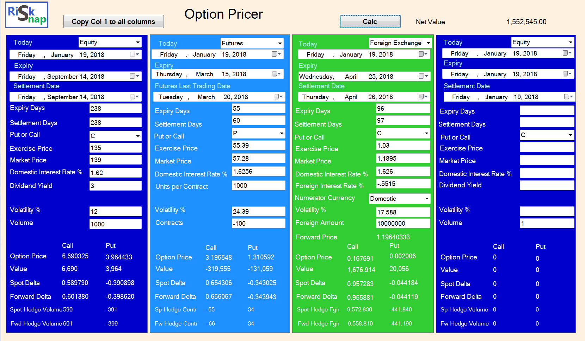

The Black-Scholes generalized formula can be used to price european options on stocks without dividends (the original model by Black and Scholes, 1973), options on stocks with a continuous dividend yield (Merton,1973), options on futures (Black 1976) and options on currencies (Garman and Kohlhagen - 1983). There are slight differences between the models, and this download presents the basic three (equity, future and foreign exchange), on one form. 
Please note that this is still in beta testing regard download procedures. Pleae contact us regarding questions.
Option Pricer Download